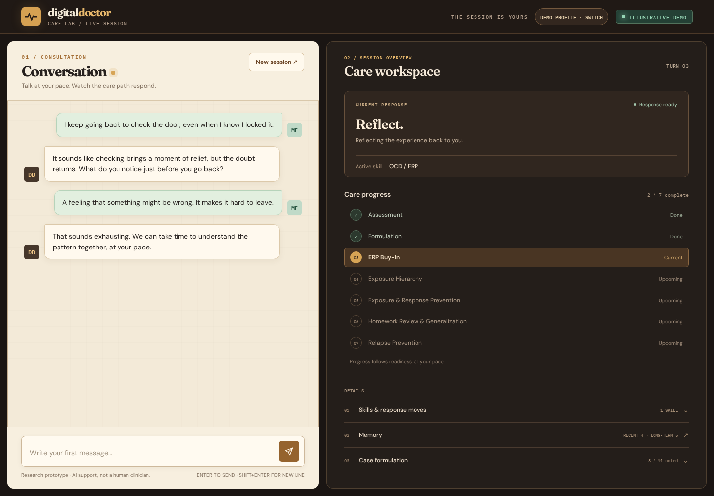
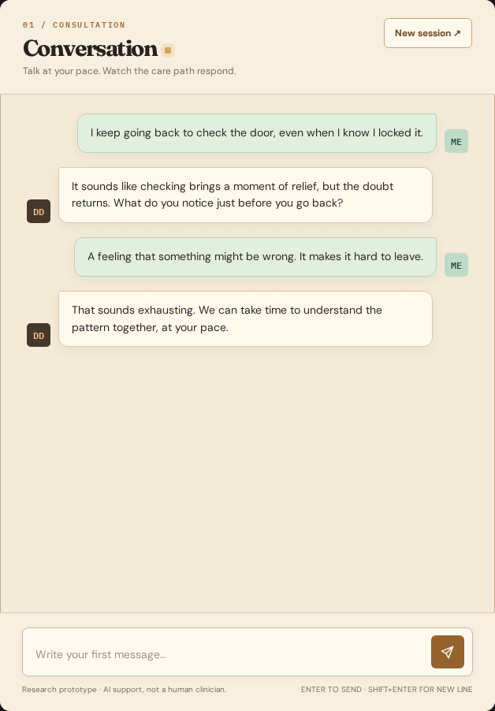

INSIDE THE CARE LAB
Every conversation.
A clearer path.
Dialogue, clinical skills, and memory.
Connected in one visible AI workspace.
A step at a time.

01 / THE WALKTHROUGH
A minute inside
the workspace.
Follow the conversation. See the selected skill. Discover how the pieces connect.
60 SECONDS · SIX MODULESCaptioned product tour
with illustrative demo content.
Read the video transcript
00:00 — Welcome. Digital Doctor brings conversation, clinical skills, and memory into one visible workspace.
00:06 — Conversation. A dedicated space for dialogue, with the care workspace alongside it.
00:14 — Live Care Map. The care guide highlights the current skill and selected response move as the conversation unfolds.
00:22 — Skill Bank. Search the registered skills by name or topic and inspect the response moves in the active skill.
00:30 — Milestone Map. View completed, active, and upcoming phases. Progress follows readiness, rather than a fixed turn count.
00:38 — Memory Cabinet. Browse recent dialogue and the summaries, topics, and reminders carried into future conversations.
00:46 — Case Formulation. Follow structured case notes as the platform records the patterns emerging in the dialogue.
00:54 — Explore. Open the live platform to explore the full workspace. Digital Doctor is a research prototype for supervised use.
02 / EXPLORE THE MODULES
One workspace.
Six connected perspectives.
Choose a module.
Get a closer look.
Real interface. Illustrative content.

Space to start a conversation.
A focused dialogue area, with your care workspace alongside it. Talk at your pace and revisit the recent exchange.
YOUR NEXT STEP